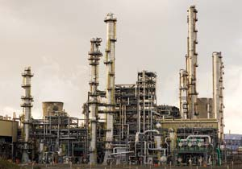
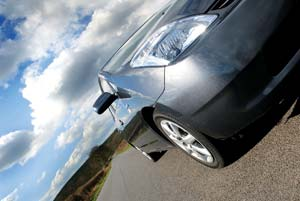
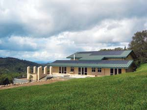
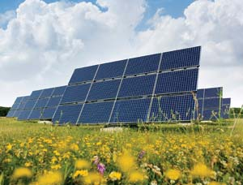

We know that relying on coal, oil and natural gas threatens our future with toxic pollution, global climate change and social unrest caused by diminishing fuel supplies. Instead of relying on unsustainable fossil fuels, we must transform our economy and learn to thrive on the planet’s abundant supply of renewable energy.
I have been studying our energy options for more than 30 years, and I am absolutely convinced that our best and easiest option is solar energy, which is virtually inexhaustable. Most importantly, if we choose solar we don’t have to wait for a new technology to save us. We already have the technology and energy resources we need to build a sustainable, solar-electric economy that can cure our addiction to oil, stabilize the climate and maintain our standard of living, all at the same time. It is well past time to start seriously harnessing solar energy.
Before you read on, take a moment to study the two corresponding pie charts, which compare the Earth’s estimated total reserves of non-renewable energy resources with the annual renewable energy options. You’ll see that the potential of solar energy dwarfs all other options, renewable or otherwise. To understand why a solar-electric economy is our best option, let’s look at the energy resources we currently depend on and compare them with the solar energy available to us.
Coal is burned mainly to produce electricity, and coal-fired power plants produce more than half the electricity used in the United States. But burning coal has serious drawbacks. One is that it releases carbon dioxide, which contributes to global warming. It also releases heavy metals, such as mercury and sulfur. These toxins that were locked in the Earth’s crust over billions of years are suddenly spewed into the atmosphere and thus degrade our air, water and soil. The exhaust from burning coal contains more pollutants and global warming emissions per unit of energy produced than any other fossil fuel. In addition, the methods used to mine coal are destructive to the land and dangerous for the miners.
Now consider that coal is enormously inefficient from a total energy perspective. It took billions of years of solar energy to form the coal we have today. And while coal is the most abundant fossil resource, the total amount of energy produced by burning all the coal on the planet would only be equivalent to the solar energy that strikes the Earth every six days.
Natural gas supplies more than half the fuel used to heat buildings and about 15 percent of the electricity in the United States. Natural-gas-fired power plants only emit about half the pollutants produced by coal plants, as long as the fuel is extracted close to where it is burned. However, U.S. natural gas extraction can no longer keep up with demand, so expensive and hazardous methods to liquefy and ship foreign natural gas are being devised. In the future, natural gas for the United States would have to be imported from countries such as Russia, Kazakhstan, Qatar and Iran, which together have 60 percent of the world’s reserves. When all the externalities, such as the cost and pollution caused by liquefying and transporting this fuel, are included, liquefied natural gas (LNG) is much more expensive than coal, and almost as dirty.
Natural gas is the second most abundant fossil fuel, but its total potential energy is equivalent to only about 1 1/2 days of sunshine striking the Earth.
Nuclear power plants fueled by radioactive isotopes of uranium produce 20 percent of the electricity used in the United States. When radioactive materials were sequestered and dispersed deep under the Earth’s surface, they presented very little threat to life. But we’ve made those materials far more dangerous by mining and concentrating them, and the byproducts left over after a nuclear reaction are even more dangerous than the original isotopes. Nuclear power plants create hundreds of thousands of tons of radioactive waste that will continue to be a threat to life for longer than humans will walk the Earth.
Even if the problem of radioactive waste could be solved, the recoverable world reserve of fissionable uranium is equivalent to less than 1 1/2 days of the energy striking the Earth from the nuclear reaction of the sun.
Oil-fired power plants have all but disappeared in the United States, but oil (mostly diesel fuel and gasoline) powers nearly all our transportation. More than 60 percent of the oil consumed in the United States is now imported. Demand for petroleum will soon exceed world production capacity and at that point the price of fuel will start to rise dramatically. We should be asking ourselves how we will cope with gas prices as they rise from $2.50 to $5 to $10 per gallon and keep rising. It’s hard to imagine the hardship that will be faced by countries that remain addicted to oil, and even harder to imagine the suffering in countries that have oil, but do not have the strength to protect their resources or themselves.
Now consider that the entire recoverable world oil reserve is equivalent to the solar energy that strikes the Earth in one day.
Before we explore the solar-electric future let’s discuss biofuels and hydrogen as other possible alternatives. Although both have received a lot of good press, I believe neither are viable solutions for our future energy needs.
Waste oil and biomass can make good transition fuels but unless human population growth slows, we will need all existing agricultural land to grow food. There are already many examples of food crop land that is being used to create ethanol to power SUVs and other flex-fuel vehicles. The cost of tortillas has quadrupled in Mexico in the last year because of rising demand for corn to make ethanol. If we let demand for biofuels increase, the impact on the world’s poor will be much more severe.
According to some studies, it takes 1,000 gallons of water and more than a gallon equivalent of fossil fuel to produce 1 gallon of corn ethanol. Finally, consider that biofuels just aren’t very efficient. When you do the math, the overall efficiency of biomass used as transportation fuel, from sun to wheel, is about 0.01 percent to 0.05 percent. In contrast, the overall efficiency of using solar panels to charge electric vehicles from sun to wheel is 3 percent to 20 percent. This means that solar-charged electric vehicles are from 60 to 2,000 times more efficient than vehicles burning ethanol or biodiesel. Which solution makes more sense?
Hydrogen fuel cell vehicles are no more efficient than biofuels. Hydrogen is much lighter than air, and it must be contained in order to keep it from escaping the Earth’s atmosphere, unless it is bound up in water or hydrocarbon molecules. The strong bonds that hold these molecules together take a significant amount of energy to break apart to extract hydrogen. Once the hydrogen is extracted, more energy is needed to compress it into a container that is small enough to store on a vehicle. In order for a fuel cell vehicle to go 200 or 300 miles on a tank, the hydrogen must be stored in metal hydrates or at 10,000 psi in heavy containers.
Even after more than 20 years of development, fuel cell vehicles still cost more than a million dollars each and don’t last very long or go very far. Finally, it takes about four times more renewable energy to drive a fuel cell vehicle than it does to charge the batteries in an electric vehicle to go the same distance. This is like the difference in fuel economy between a Hummer and a Prius. If you are wondering why hydrogen fuel cell vehicles continue to receive billions of dollars in funding given all these barriers, the fact that 96 percent of all hydrogen is currently extracted from fossil fuels may have something to do with it. There are powerful vested interests controlling our energy policy. Only informed citizens acting together can steer the best course.
A solar-electric economy is well within our reach. We’re already generating solar electricity at the utility scale using powerful concentrating solar power technology. We’re also generating electricity through wind energy, which many experts consider an indirect form of solar energy because it’s driven by temperature differences.
But also consider that simply incorporating passive solar design strategies (see “Homes Powered by the Sun,” below), energy efficiency, conservation and other active solar heating strategies in the construction of buildings can save up to 95 percent of the energy used in conventional buildings. With the addition of building-integrated photovoltaics, buildings can be turned into net energy producers. Energy from the sun can be used to power our vehicles, and that includes not only our cars, but also heavy vehicles such as tractors.
Electric Vehicles & Plug-in Hybrids. Electric vehicle drivetrains are inherently five to 10 times more efficient than internal combustion engines and they produce no greenhouse gases at the tailpipe. Even if powered by fossil-fuel electricity, emissions at the power plant are much lower per mile traveled than with internal combustion engines. In addition, electric vehicles can be charged directly from renewable sources, thereby eliminating emissions altogether.
One of the main excuses the auto industry offers for the lack of electric vehicles is that “the batteries are not developed yet.” But consider how quickly cell phone batteries developed, transforming mobile phones from heavy, bulky, short-lived nuisances to amazingly light, small and long-lasting necessities. The oil companies are doing a good job of protecting the American consumer from “dangerous” batteries, but in parts of the world where oil companies have less control, large format battery development is progressing at rapid speeds.
Electric Tractors and Agriculture. Experts have estimated that it takes eight to 10 units of fossil energy to put one unit of food energy on American tables, and that it takes the equivalent of 10 barrels of oil to feed each person in the country. Hearing those figures, it’s frightening to imagine what will happen as oil prices rise. To begin with, how would we fuel our farm machinery?
The good news is that not only can tractors run on electricity, they run even better on electricity than passenger vehicles do because of their greater weight and slower speeds. An electric tractor can quietly accomplish all the tasks necessary to maintain productivity on a small farm.
Dealing with the rising cost of mobility and energy are huge challenges, and the biggest challenge facing humanity may be maintaining an affordable and nourishing food supply. But we can have fresher and more nourishing food without fossil fuels. What it will take is public support for a switch to local food production on small organic farms using solar irrigation pumps and solar-charged electric tractors.
It’s easy to feel confused, cynical and even hopeless about the state of the planet these days. But I am excited and optimistic because I know we have the technology now that will allow us to wean ourselves from fossil fuels and move to a renewable solar-electric energy system.
Yes, I know - solar panels are still too expensive for many of us. But 10 years ago, nobody gave hybrid cars a chance of succeeding. Today, the Toyota Prius is the hottest thing going. Plug-in hybrids and all-electric options should be available soon. If we all work together and demand that our government set a wise energy policy and use taxes to support the right renewable energy options, I predict we can put the brakes on climate change and enjoy clean, true-green energy.
Wind 200,000
Ocean/Thermal 100,000
Biofuels 50,000
Geothermal 10,000
Tidal/Wave 5,000
The amount of solar energy available each year (yellow circle, Image Gallery) dwarfs supplies of any other source of power, including total reserves of all the fossil fuels on Earth (small circle, Image Gallery).
Coal 6,000,000
Natural Gas 1,500,000
Uranium 235 1,500,000
Oil 1,000,000
Tar Sands 800,000
Total: 10,800,000
*1 terawatt hour is equal to 1 billion kilowatt hours
Most of us depend on fossil fuels to keep our homes comfortable by providing heating, cooling and electricity. But surprisingly, it isn’t all that difficult to turn our homes from energy consumers into energy producers. New homes can easily be designed to take advantage of natural heat, light and ventilation; run more efficiently on less electricity; and be fitted with solar panels to produce electricity. Here are a few specific steps that make a big difference:
1980: 82,919 terawatt hours
2004: 130,971 terawatt hours
Projected for 2030: 205,686 terawatt hours
Source: U.S. Energy Information Administration
Not only is the potential of solar power enormous, we already have the technology to take advantage of it. We can design our homes for solar heating and wind-powered cooling. Solar electricity can power our homes, our cars and even our tractors. All we have to do is start using it on a wider scale. So what are we waiting for?
|
ISTOCKPHOTO Solar is a promising source of future energy supplies because not only is it clean, it’s remarkably abundant. |
ISTOCKPHOTO Biofuels get a lot of good press, but supplies of fuel crops will never be as large as our solar energy resources.
|
ISTOCKPHOTO/ANNA PUSTOVAYA Most of the electricity in the United States comes from coal, but burning coal produces a lot of pollution, including carbon dioxide, mercury and sulfur emissions.
|
|
 ISTOCKPHOTO/GEORGE CLERK In the United States, most oil is used for transportation. Dwindling world oil supplies already have many people worried about future prices. |
ISTOCKPHOTO/MARIANN KIS Wind power is a clean-burning source of electricity, and has the potential to meet many of our future energy needs. |
 ISTOCKPHOTO/IAN FRANCIS The popularity of hybrid electric cars is an encouraging sign that there are practical, appealing solutions to the problem of how to use less energy. |
|
 DC POWER SYSTEMS With building-integrated photovoltaics, homes and offices can actually produce more energy than they consume. |
ISTOCKPHOTO/ALEXY GOSTEV At current rates of consumption, world oil supplies are only projected to last for another 40 years.
|
 ISTOCKPHOTO World supplies of solar energy are virtually inexhaustible, and can be tapped using current technology. Will solar power lead us to a brighter future? |
|
MATTHEW T. STALLBAUMER Left: Annual global renewable energy resources, 725 million terrawatt hours. Right: Total global non-renewable energy resources, 10.8 million terrawatt hours. Click here for a larger image with specific energy resource numbers. |
|
|